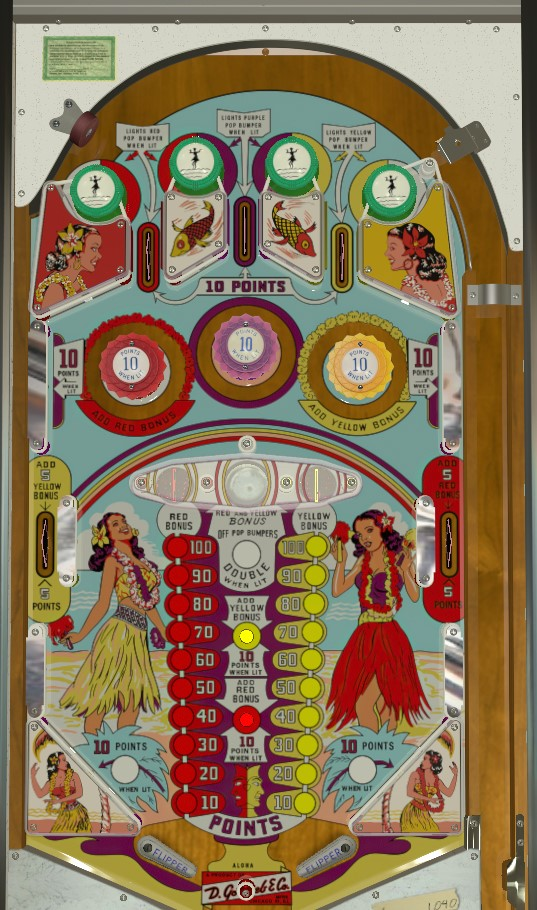

A skillful plunge goes into the top lane where the green passive bumpers on either side of the lane are lit, which in turn lights a pop bumper for 10 points. Hitting a passive bumper changes which ones are lit. Use red or yellow bumpers to advance the red and yellow bonuses. Collect one colour's bonus at the saucers; you can collect both bonuses at once, and even double both bonuses, with the center gobble hole, but this ends your ball, so it's never desirable in a 1-player game. However, it can limit player 2's scoring opportunities, since all lit features are preserved across balls.
At any given time, one of the three top lanes will be "lit" by having the two green passive bumpers on either side of the lane being illuminated. Each time a passive bumper is hit/1 point is scored, the lights will move such that a different lane is lit. All top lanes score 10 points. When lit, the left lane lights the red bumper and red rollover button; the center lane lights the purple bumper; and the right lane lights the yellow bumper and yellow rollover button. Bumpers and rollover buttons score 1 point or 10 when lit.
The red pop bumper and the red rollover button near the flippers each give 1 red bonus advance when pressed, regardless of whether they are lit or not. The middle side lane on the right gives 5 points and 5 red bonus advances. All the same features exist in yellow: the rightmost pop bumper, the rollover button just above the red, and the left middle side lane. Each advance of one colour's bonus is worth 10 points. Bonuses can only be collected at the saucers in the center of the table. The left saucer collects the red bonus, and the right saucer collects the yellow bonus. In between the two saucers is a gobble hole, which collects both bonuses, but unlights all pop bumpers and rollover buttons as well as ending the current ball. Various 1- or 10-point switch hits toggle whether the gobble hole is lit for double bonus as well, scoring 20 points per advance on both colour bonuses, for a maximum of 400 points.
In a 1-player game, the center gobble hole should generally be avoided unless both bonuses are very high and the double bonus is lit, because the cost of a ball is almost never worth the benefit of being able to keep a ball in play and continue to score. However, if playing Aloha in any multiplayer setting, you can take a lot of points for yourself and possibly sabotage an opponent by taking the gobble hole, since the next player will step up to the machine with nothing in either bonus count and no pop bumpers lit. Otherwise, uncollected colour bonuses and lit double bonus are preserved from player to player and game to game. Pop bumpers are also preserved from ball to ball, but reset to all be off at the beginning of a new game.
There are no in lanes or out lanes. Flippers back up directly to the slingshots, which score 1 point or 10 when lit; one of the two is always lit, alternating with any 1-point switch hit. 2-inch mini-flippers are used. The flipper gap is very wide, with a center post between and at the same level as the flippers; the distance between the tip of each lowered flipper and the center post is not much more than the width of a pinball. The slingshots extend to the edges of the table; the only ways to lose a ball are center drain or gobble hole.
There is no end of ball bonus, extra ball, or playfield special. Tilt ends game, but only for the player who tilted.